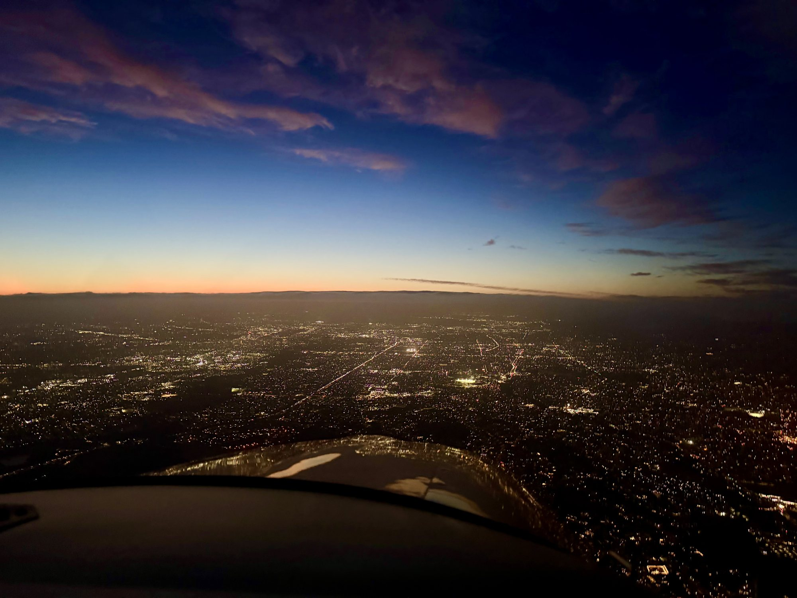

What comes after the certificate
Adventures
Once you have earned your certificate you will ask, "What's next?" For most pilots the first answer is lunch — the hundred-dollar hamburger at an airport an hour away. This page is about what comes after that.
Where a Bay Area pilot can go in a day
The San Francisco Bay Area is one of the best places in the country to be a pilot: the coast, the Sierra Nevada, the Central Valley and the high desert are all within a few hours' flying, and many of them are close enough to visit and come home from in the same day.
TBDdestinations, one line each
Mountain and remote flying
Flying into mountain and desert airports is some of the most rewarding flying there is, and it asks more of you than the traffic pattern does: density altitude, winds and terrain, short and sloping runways, and long stretches with nowhere to land. TBDmountain checkout offered? what it consists of
Trips
TBDJack's trips
Photos

TBDwhere and when each photo was taken, and more photos